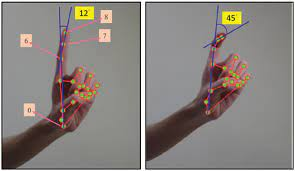

Explore the seamless integration of human gestures with machinery using the MediaPipe module in Python. This integration allows users to interact with machines through intuitive hand movements, opening doors to applications such as gesture-controlled robotics, virtual interfaces, and interactive systems. MediaPipe's advanced hand-tracking capabilities serve as a bridge between human gestures and machine responsiveness, fostering a more natural and user-friendly interaction paradigm.
Mediapipe & Michro-Controller :
Mediapipe integration with microcontrollers marks a significant advancement in bringing real-time computer vision capabilities to edge devices. This fusion is driven by the need for efficient and low-latency processing in applications like robotics, IoT, and embedded systems.
The integration is achieved by adapting and optimizing the algorithms used by Mediapipe, a powerful cross-platform framework for building machine learning pipelines. This allows computationally intensive tasks, such as facial recognition or gesture detection, to be executed on resource-constrained microcontrollers without relying on external servers or cloud processing.
The rationale behind this integration lies in decentralizing computation, reducing latency, and enhancing privacy by processing data locally. Microcontrollers, with their compact size and energy-efficient design, enable these tasks to be performed on-device, leading to quicker responses and improved user experiences.
To implement this integration, developers modify and streamline the original algorithms to fit within the constraints of microcontroller architectures. This involves optimizing code, reducing memory usage, and leveraging hardware acceleration when available. The result is a harmonious blend of machine learning capabilities and compact, energy-efficient microcontroller solutions.
This synergy between Mediapipe and microcontrollers opens doors to a wide range of applications, from smart cameras and wearables to intelligent edge devices. It reflects the industry's shift towards edge computing, emphasizing the importance of on-device processing for enhanced efficiency and user privacy.
Moreover, the collaboration between Mediapipe and microcontrollers aligns with the growing demand for edge AI solutions in diverse industries. Applications span from industrial automation and surveillance to healthcare devices, where the ability to process visual data locally enhances privacy and security.
In summary, the integration of Mediapipe with microcontrollers addresses the need for on-device, low-latency processing in edge computing. This collaboration not only enhances the efficiency of embedded systems but also fosters a new era of intelligent, autonomous devices with improved privacy and reduced dependence on external resources.
Project ideas :
1.Smart Relaxation : Controlling Room Lights Using Hands
in the fast-paced world we live in, finding moments of relaxation is essential. Imagine having the power to control the ambiance of your room effortlessly while lying on your bed. This innovative concept involves integrating a Mediapipe module with a microcontroller to enable users to adjust the intensity and color of their room lights using simple gestures.

The Idea :
The core idea is to leverage the capabilities of Mediapipe, a versatile framework for machine learning applications, to interpret hand gestures or body movements. By integrating this technology with a microcontroller, we can create a seamless interface for users to control their room lighting without reaching for a switch.
working :
1.MediaPipe Gesture Recognition :
The system uses the Mediapipe framework to recognize predefined gestures. For instance, a specific hand movement could signify adjusting the light intensity, while another might control the color.
2.Microcontroller Processing :
The microcontroller processes the gesture data locally, ensuring quick and responsive adjustments. It translates the recognized gestures into commands for the room lighting system.
Smart lighting control :
The microcontroller communicates with the lighting system, enabling users to effortlessly dim or brighten the lights and choose from a spectrum of colors, creating a personalized and relaxing atmosphere.
Benefits :
1.convenience
Users can control their room lights without getting up, providing a new level of convenience and comfort.
2.Prosnalisation :
The system allows users to tailor the lighting to their preferences, promoting a personalized and soothing
Energy Efficiency :
Local processing reduces the need for constant internet connectivity, enhancing energy efficiency.
Suitable Time For Use :
This smart lighting system is particularly suited for bedtime routines or moments of relaxation. Imagine winding down for the night and being able to adjust the lighting without disrupting the calmness of your surroundings. The system could also be integrated into wellness spaces, such as meditation rooms or relaxation zones.
Conclusion
ntegrating Mediapipe with a microcontroller to control room lighting opens up exciting possibilities for a more connected and personalized living space. This innovative blend of technology not only enhances the convenience of daily life but also brings a touch of futuristic sophistication to our homes.
In a world where technology continually strives to make our lives more comfortable, this concept stands out as a simple yet impactful way to create a serene and personalized environment at the touch of a hand.
2.Revolutionizing Video Control: Gesture-Based Interaction
In the fast-evolving landscape of technology, the fusion of computer vision and microcontroller integration opens up new avenues for seamless and intuitive interactions. Imagine a world where controlling your video player doesn't require a remote or mouse but simply responds to your hand gestures. This innovative idea combines the power of Google's Mediapipe framework with microcontrollers to create a hands-free video player control system.
Why Integrate Mediapipe with Microcontroller? :
The primary motivation behind this integration is to enhance user experience and convenience. By leveraging the capabilities of Mediapipe for real-time hand gesture recognition, coupled with the efficiency of microcontrollers, we can create a system that interprets and responds to gestures directly, without the need for external devices.
How It Works: A Brief Explanation :
The process begins with a camera capturing the user's hand gestures. The video feed is processed in real-time using the powerful algorithms provided by Mediapipe, identifying specific gestures like a palm open for play, a closed fist for pause, swiping gestures for volume and brightness control, and more.
Once recognized, these gestures trigger commands that are communicated to the microcontroller. The microcontroller, optimized for efficiency and low-latency responses, translates these commands into actions that control the video player. This seamless interaction creates a natural and intuitive way to manage video playback without the need for additional peripherals.
Benefits and Applications :
This innovation not only simplifies the user interface but also eliminates the need for external accessories like remotes or mice. It enhances accessibility, particularly in scenarios where users may have mobility challenges or prefer a touchless interface. Additionally, the reduced dependency on traditional input devices contributes to a cleaner, more streamlined entertainment setup.
The applications of this hands-free video player control system extend beyond home entertainment. It could find utility in public spaces, presentations, and interactive displays, offering a novel and engaging way to interact with video content.
Suitable Timeframe for Development :
The development of this project is contingent on various factors such as the complexity of gesture recognition algorithms, the choice of microcontroller, and integration challenges. However, with a dedicated team and streamlined development processes, a proof-of-concept could be achieved within a few months. Fine-tuning and optimization may extend the timeframe, but the end result promises to redefine how we interact with video content.
In conclusion, the integration of a Mediapipe module with a microcontroller to create a gesture-based video player control system represents a forward-looking and user-centric approach to technology. This idea not only aligns with the trend of touchless interfaces but also showcases the potential for creative and practical applications at the intersection of computer vision and embedded systems.
3.Revolutionizing Gaming: Hand Gesture Controls :
In the fast-paced world of technology, innovation continually reshapes the way we interact with devices. One groundbreaking idea that merges computer vision and microcontroller technology is the integration of a Mediapipe module to enable hand gesture control for games. Imagine seamlessly navigating through your favorite games without the need for a mouse or remote – just your hand gestures steering the action.
The Concept :
The concept revolves around using the power of Mediapipe, a versatile framework for machine learning-based solutions, and harnessing the efficiency of microcontrollers to interpret and respond to hand gestures. This approach not only adds a futuristic flair to gaming but also eliminates the need for traditional input devices, offering a more immersive and intuitive gaming experience.
Working :
The Mediapipe module would analyze real-time video feed from a camera, interpreting hand gestures through its advanced computer vision algorithms. The microcontroller processes this information locally, converting gestures into commands that control in-game actions. This on-device processing ensures minimal latency, providing a responsive and engaging gameplay experience.
Benefits :
1.immersive gameplay :
Hand gesture control adds a new dimension to gaming, allowing users to feel more connected to the virtual world.
2.Simplified Interaction :
Say goodbye to cumbersome remotes or mice – gesture control simplifies the gaming interface.
3.Low Latency :
On-device processing minimizes delays, ensuring actions are reflected instantly in the game.
Suitable Time for Implementation: :
The development and implementation of this gaming revolution could take place now, considering the maturity of both Mediapipe and microcontroller technologies. With advancements in machine learning and the widespread availability of microcontroller platforms, the timing is ideal for developers to embark on creating this innovative solution.
In conclusion, the marriage of Mediapipe with microcontrollers to enable hand gesture control in gaming is a promising leap towards a more immersive and natural gaming experience. As technology continues to evolve, embracing such ideas not only enhances entertainment but also opens the door to novel ways of human-computer interaction. Now is the time to turn this concept into reality and redefine the future of gaming.
Our Personal Thinking on AR/VR Accessebility :
1. In this era, especially in 2024 after the launch of APPLE VISION PRO, this world is heading towards a completely AUGMENTED & VIRTUAL REALITY. And now, within a few years, these technologies will also be integrated into our lives, just like today's smartphones. So, in this case, we also have to update ourselves with this updating world; otherwise, we will be left behind.
2. In future technologies such as gesture recognition will be common & left the most of the today's technologies behinde because we will be become too use to with them.
3. so our projects are based on them to introduce the working, benefits, & implementation of such technologies to all of us & also to show that this technology is How much amazing.
4. these are helpful in medical field ,education field, in IOT & Many more.